승강기기사 (2016-03-06 기출문제)
1과목: 승강기 개론
1. 빈칸의 내용으로 옳은 것은?
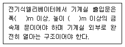
- 폭: 0.7 높이 : 1.8
- 폭: 0.7 높이 : 1.7
- 폭: 0.65 높이 : 1.8
- 폭: 0.8 높이 : 1.7
(정답률: 87%)

2. 빈칸의 내용으로 옳은 것은?
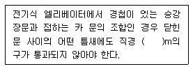
- 0.1
- 0.15
- 0.2
- 0.25
(정답률: 76%)
3. 완성검사 시 승객용 엘리베이터의 카 문턱과 승강장문 문턱 사이의 수평거리는 몇 mm 이하인가?
- 35
- 40
- 45
- 50
(정답률: 85%)
4. 권상기의 미끄러짐을 결정하는 요소에 대한 설명으로 옳은 것은?
- 견인비(트랙션비)가 클수록 미끄러지기 쉽다.
- 로프 감기는 각도가 클수록 미끄러지기 쉽다.
- 카의 가속도와 감속도가 작을수록 미끄러지기 쉽다.
- 로프와 도르래의 마찰계수가 클수록 미끄러지기 쉽다.
(정답률: 73%)
5. 전기식엘리베이터에서 조속기 명판에 반드시 표시되어할 것이 아닌 것은?
- 제조업체명
- 보수업체명
- 안전인증표시
- 조정을 위한 실제 작동속도
(정답률: 77%)
6. 카 틀의 부품이 아닌 것은?
- 카주
- 카 바닥
- 하부체대
- 브레이스 로드
(정답률: 63%)
7. 여러 층으로 배치되어 있는 고정된 주차구획에 아래·위 및 옆으로 이동할 수 있는 운반기에 의하여 자동차를 자동으로 운반 이동하여 주차하도록 설계한 주차장치는?
- 승강기식 주차장치
- 다층 순환식 주차장치
- 수평 순환식 주차장치
- 승강기 슬라이드식 주차장치
(정답률: 64%)
8. 시브(Sheave)의 흠 형상 중 언더 컷(Under cut)형상을 사용하는 주된 이유는?
- 시브의 마모를 줄이기 위하여
- 마찰계수를 증가시키기 위하여
- 시브의 속도를 조정하기 위하여
- 로프의 수명을 증대시키기 위하여
(정답률: 69%)
9. 기계실의 구조에 대한 설명으로 틀린 것은?
- 다른 부분과 내화구조로 구획한다.
- 다른 부분과 방화구조로 구획한다.
- 내장의 마감은 방청도료를 칠하여야 한다.
- 벽면이 외기에 직접 접하는 경우에는 불연재료로 구획할 수 있다.
(정답률: 75%)
10. 카의 상승과속방지수단에 대한 설명으로 틀린 것은?
- 이 수단이 작동되면 복귀는 전문가의 개입이 요구되어야 한다.
- 이 수단은 빈 카의 감속도가 정지단계 동안 1gn를 초과하는 것을 허용하지 않아야 한다.
- 이 수단의 복귀는 카 또는 균형추에 접근을 요구하여야 한다.
- 이 수단은 복귀 후에 작동하기 위한 상태가 되어야 한다.
(정답률: 56%)
11. 무빙워크의 경사도는 몇 도(°) 이하인가?
- 12
- 13
- 14
- 15
(정답률: 81%)
12. 엘리베이터 주로프에 가장 일반적으로 사용되는 와이어로프는?
- 8×W(19), E종, 보통 Z꼬임
- 8×W(19), E종, 보통 S꼬임
- 8×S(19), E종, 보통 S꼬임
- 8×S(19), E종, 보통 Z꼬임
(정답률: 77%)
13. 전기식 엘리베이터에서 권상도르래와 현수로프의 공칭직경사이의 비는 얼마 이상인가?
- 20
- 30
- 35
- 40
(정답률: 82%)
14. 에스컬레이터의 공칭속도는 경사도가 30° 이하인 경우 일반적으로 몇 m/s 이하로 하는가?
- 0.75
- 0.80
- 0.90
- 1.0
(정답률: 83%)
15. 정지 레오나드 방식에서 정지형 반도체 소자를 이용하여 교류를 직류로 전환시킴과 동시에 무엇을 제어하여 직류전압을 변화 시키는가?
- 점호각
- 주파수
- 전압
- 전류
(정답률: 79%)
16. 다음 보기의 교류엘리베이터 속도제어방식 중 수송능력이 우수한 순으로 나열된 것은?
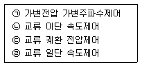
- ㉠, ㉡, ㉢, ㉣
- ㉢, ㉠, ㉣, ㉡
- ㉠, ㉢, ㉡, ㉣
- ㉣, ㉢, ㉡, ㉠
(정답률: 77%)
17. 조속기의 회전속도가 정격속도를 넘을 때 기계적으로 감지하는 것은?
- 진자 또는 볼
- 로프캐치 및 훅
- 진자와 전기스위치
- 스프링과 전기스위치
(정답률: 75%)
18. 에스컬레이터 적재하중의 산출 공식은? (단, A:에스컬레이터 스탭면의 수평투영면적(m2))
- 200 × A
- 270 × A
- 400 × A
- 540 × A
(정답률: 83%)
19. 승장의 신호장치가 아닌 것은?
- 방향등
- 만원등
- 인디케이터
- B.G.M장치
(정답률: 81%)
20. 유압식 엘리베이터에 주로 사용되는 펌프의 방식은?
- 원심식
- 강제 송유식
- 자연 송유식
- 가변 토출량식
(정답률: 69%)
2과목: 승강기 설계
21. 아래 그림은 승강기 속도제어 회로와 속도곡선이다. 3개의 스위치 S의 상태와 속도곡선의 구간에 대한 설명 중 틀린 것은?
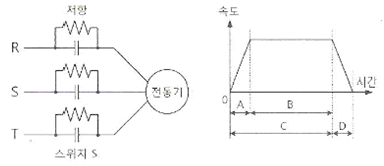
- A구간은 전동기가 기동하는 구간으로 3개의 스위치 S를 개방한다.
- B구간은 전동기가 정속으로 운전하는 구간으로 3개의 스위치 S를 연결한다.
- C구간은 전동기의 속도가 변화하는 구간으로 브레이크를 작동한다.
- D구간은 전동기가 감속되는 구간으로 속도가 0 가까이 되면 3상 전원 R, S, T를 차단한다.
(정답률: 72%)
22. 공칭속도 0.5m/s, 시간당 6000명을 수송할 수 있는 에스컬레이터를 설치하고자 할 경우 스텝 폭은 몇 m 인가?(오류 신고가 접수된 문제입니다. 반드시 정답과 해설을 확인하시기 바랍니다.)
- 0.4
- 0.6
- 0.8
- 1
(정답률: 43%)
23. 스트랜드의 외층소선을 내층소선보다 굵게하여 구성한 로프로 내마모성이 커 엘리베이터 주로프에 가장 많이 사용하는 종류는?
- 실형
- 필러형
- 워링턴형
- 나프레스형
(정답률: 73%)
24. 승객용 엘리베이터의 적재하중 = 1000kg, 카전자중 = 2200kg, 길이 = 180cm, 사용재료 = 180×75×7, 단면계수 = 306cm3 일 경우 하부체대의 최대굽힘 모멘트(kg·cm)는? (단, 카의 전자중을 계산하고 또한 브레이스 로드가 분담하는 하중을 무시한다.)
- 72000
- 75000
- 77000
- 80000
(정답률: 46%)
25. 카바닥과 카틀의 부재에 작용하는 하중의 종류가 틀리게 연결된 것은?
- 볼트 - 장력
- 카바닥 - 장력
- 추돌판 - 굽힘력
- 카주 - 굽힘력, 장력
(정답률: 71%)
26. 코일 스프링에서 전단응력을 구하는 식은? (단, r:전단응력, W:스프링에 작용하는 하중, D:평균지름, d:환봉의 지름이다.)
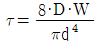
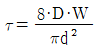
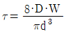
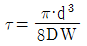
(정답률: 63%)
27. 엘리베이터의 미터인 유압회로에 대한 설명으로 틀린 것은?
- 기동 시 유량조정이 어렵다.
- 스타트 쇼크가 발생하기 쉽다.
- 상승운전 시 효율이 좋지 않다.
- 유량제어밸브를 바이패스 회로에 삽입한다.
(정답률: 63%)
28. 화물용 엘리베이터의 정격하중은 카의 면적 1m2 당 몇 kg으로 계산한 값 이상으로 하여야 하는가?
- 100
- 150
- 200
- 250
(정답률: 73%)
29. 변압기 2차측의 무부하 전압은 210V이고 전부하 전압은 200V일 때 변압기의 전압변동률은 몇 % 인가?
- 5
- 10
- 15
- 20
(정답률: 70%)
30. 엘리베이터에서 발생할 수 있는 범죄를 예방하기 위하여 실시하는 대책이 아닌 것은?
- 인터폰을 설치한다.
- 각 층 강제 정지운전을 한다.
- 각 도어마다 방범창을 부착한다.
- 기준층에 파킹스위치를 부착한다.
(정답률: 73%)
31. 승객용 엘리베이터의 카 바닥앞에 설치되는 보호판에 대하여 틀리게 설명한 것은?
- 카 문턱에는 승강장 유효 출입구 전폭에 걸쳐 설치되어야 한다.
- 수직 부분의 높이는 0.75m 이상이어야 한다.
- 보호판은 금속제판으로 충분한 강도 및 강성을 가져야 한다.
- 보호판의 아랫부분은 안전에 지장이 없도록 충분히 퍼져야 한다.
(정답률: 56%)
32. 승강로의 구조에 대한 설명으로 틀린 것은?(관련 규정 개정전 문제로 여기서는 기존 정답인 3번을 누르면 정답 처리됩니다. 자세한 내용은 해설을 참고하세요.)
- 승강로의 내측면과 카 문턱, 카 문틀 또는 카문의 닫히는 모서리 사이의 수평거리는 0.125m 이하이어야 한다.
- 승강로는 엘리베이터 전용으로 사용되어야 하므로 엘리베이터와 관계없는 배관, 전선 또는 장치 등이 있어서는 안 된다.
- 승강로 하부에 접근할 수 있는 공간이 있는 경우, 피트의 기초는 5,000 N/m2 미만의 부하가 걸리는 것으로 설계되어야 한다.
- 승강로 하부는 피트로 구성되어야 하고, 피트 바닥은 완충기, 가이드 레일 기초 및 배수장치를 위한 부분을 제외하고 매끄럽고 평탄하여야 한다.
(정답률: 72%)
33. 피트 바닥은 전 부하 상태의 카가 완충기에 작용하였을 때 완충기 지지대 아래에 부과되는 정하중의 몇 배를 지지할 수 있어야 하는가?
- 4
- 5
- 8
- 10
(정답률: 71%)
34. 비상정지장치가 작동할 때 각 항목별로 이상유무를 확인하여야 한다. 다음 중 틀린 것은?
- 카 바닥의 수평도는 1/40이내 이어야 한다.
- 시브가 회전하여도 카는 하강하지 않아야 한다.
- 기계장치 및 조속기로프에 아무런 손상을 받지 않아야 한다.
- 비상정지장치는 작동 시부터 완전정지 할 때까지의 거리를 측정한다.
(정답률: 68%)
35. 조속기로프에 대한 설명으로 틀린 것은?
- 조속기로프의 공칭직경은 8mm 이상이어야 한다.
- 조속기로프는 인장 풀리에 의해 인장되어야 한다.
- 조속기로프는 비상정지창치로부터 쉽게 분리될 수 있어야 한다.
- 조속기는 조속기 용도로 설계된 와이어로프에 의해 구동되어야 한다.
(정답률: 56%)
36. 엘리베이터의 감시반에 대한 설명 중 틀린 것은?
- 보수의 신속성을 목적으로 사용된다.
- 사고 시 승객의 신속한 구출을 목적으로 한다.
- 주행방향, 정지, 고장 등의 운전상태를 표시한다.
- 카내의 승객 감시 및 방범의 목적으로 사용ㅎ된다.
(정답률: 77%)
37. 괄호 안의 알맞은 내용으로 옳게 짝지어진 것은?
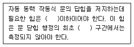
- 100N, 1/3
- 150N, 2/3
- 100N, 2/3
- 150N, 1/3
(정답률: 68%)
38. 기계대 강도 계산 시 작용하는 하중에 포함되지 않는 것은?
- 로프 자중
- 기계대 자중
- 권상기 자중
- 균형추 자중
(정답률: 62%)
39. 승강로 상·하의 단말 정차장치(Terminal Stopping Device)에 대한 설명 중 틀린 것은?
- 이 장치는 최종단말정차장치가 작동할 때까지 그 기능이 유지되도록 설계 및 설치되어야 한다.
- 권상기를 위한 정차장치는 카, 승강로 또는 기계실에 위치하여 카의 이동에 의하여 조작되어야 한다.
- 기계실에 설치되는 것은 기계적으로 연결되어 카의 이동에 의하여 동작하거나 마찰 또는 견인에 의하여 구동되는 방식을 이용한다.
- 정차장치가 카에 기계적으로 연결되고, 구동수단으로 사용되는 테이프, 체인, 로프 및 이와 유사한 장치의 구동수단에 이상이 발생할 경우 구동모터를 차단하고 제동기를 작동시킬 수 있는 장비를 구비하여야 한다.
(정답률: 51%)
40. 기계실에 설치할 수 있는 설비로 적합한 것은?
- 변압기
- 피뢰침선
- 급배수설비
- 비상용 스피커
(정답률: 65%)
3과목: 일반기계공학
41. 제작하려는 주물과 동일한 모형을 왁스 또는 파라핀으로 만들어 주형재에 매몰하고 주형을 가열 경화시키며 모형을 유출하여 주형을 완성하므로 정밀한 조조를 할 수 있는 것은?
- 인베스트먼트법
- 셀몰딩법
- 다이캐스팅법
- 이산화탄소법
(정답률: 70%)
42. 다음 중 두 축이 평행하지도 교차하지도 않은 기어는?
- 웜 기어
- 베벨 기어
- 헬리컬 기어
- 제롤 베벨 기어
(정답률: 59%)
43. 원형 봉의 양단에 나사를 가공한 것으로 볼트의 머리가 없고 한쪽은 탭 볼트의 형태와 같으며, 한쪽은 머리가 없는 대신 나사부에 너트를 끼워서 죌 수 있도록 한 볼트로 부품을 자주 분해할 경우 사용하는 것은?
- 관통 볼트
- 스터드 볼트
- 스테이 볼트
- 턴 버클 볼트
(정답률: 62%)
44. 그림에서 단면적 A1은 100cm2, 단면적 A2는 600cm2이고, A1 부분에 작용하는 실린더 작용력 P1은 200kN 일 때 A2 부분의 실린더가 발생하는 힘 P2는 약 몇 kN 인가? (단, 그림과 같이 두 공간 사이에는 유압 작동유가 가득차 있다고 가정한다.)
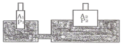
- 20
- 1200
- 2000
- 12000
(정답률: 69%)
45. 일반 주철에 관한 설명으로 틀린 것은?
- Fe-C 합금에서 C의 함량이 2.11~6.67% 인 것을 말한다.
- 철강과 비교하여 단련이 우수하다.
- 철강에 비하여 인성이 낮고 메짐성이 크다.
- 철강보다 용융점이 낮아 주조성이 우수하다.
(정답률: 47%)
46. 축의 회전에 의해 동력을 전달하는 축으로 주로 비틀림 모멘트를 받는 축의 명칭으로 가장 적합한 것은?
- 중공축
- 크랭크축
- 전동축
- 플랙시블축
(정답률: 48%)
47. 기어 펌프의 이송 체적이 3.0cm3/rev 이고, 회전수가 1500rpm 일 때 이 펌프의 이론 토출량은 약 몇 L/min 인가?
- 4500
- 4.5
- 500
- 0.5
(정답률: 53%)
48. 단조를 열간 단조와 냉간 단조로 분류할 때 냉간 단조에 해당되지 않는 것은?(오류 신고가 접수된 문제입니다. 반드시 정답과 해설을 확인하시기 바랍니다.)
- 해머 단조(hammer forging)
- 콜드 헤딩(cold heading)
- 스웨이징(swaging)
- 코이닝(coining)
(정답률: 57%)
49. 다음 중 미소 이동량의 확대 지시장치로 레버(lever)를 이용하는 측정기는?
- 마이크로미터
- 다이얼게이지
- 미니미터
- 볼트미터
(정답률: 67%)
50. 중실축에서 동일한 비틀림 모멘트를 작용시킬 때 지름이 2배가 증가하면 저장되는 탄성에너지는 증가하기 전 탄성에너지에 비해 얼마로 변하는가?
- 1/2
- 1/4
- 1/8
- 1/16
(정답률: 52%)
51. 그림과 같이 도시된 유압 밸브 기호의 명칭은?
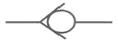
- 체크 밸브
- 셔틀 밸브
- 감속 밸브
- 릴리프 밸브
(정답률: 70%)
52. 열응력에 영향을 미치는 주요 인자가 아닌 것은?
- 소재의 지름
- 선팽창계수
- 세로 탄성계수
- 온도 차
(정답률: 54%)
53. 피복 아크 용접에서 피복제의 역할이 아닌 것은?
- 아크를 안정시킨다.
- 용착금속을 보호한다.
- 급냉을 막아 조직을 좋게 한다.
- 고주파 발생을 억제한다.
(정답률: 62%)
54. 미터계열 사다리꼴 나사의 나사산 각도는 몇도인가?
- 29°
- 30°
- 58°
- 60°
(정답률: 65%)
55. 다음 단면의 모양 중 외팔보에서 처짐량이 가장 작은 것은? (단, 단면적은 모두 동일하고 작용하중이나 재질 및 길이는 같다고 가정한다.)
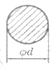
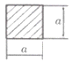
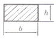
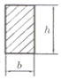
(정답률: 60%)
56. 다음 중 청동이라고 하면 어떤 합금을 말하는가?
- Cu - Zn
- Cu - Mn
- Cu - Si
- Cu - Sn
(정답률: 54%)
57. 영 계수(Young’s modulus)에 대한 설명으로 가장 옳은 것은?
- 비례한도 내에서 응력-변형률 선도의 기울기를 의미한다.
- 고무와 같이 늘어나기 쉬운 재료는 비교적 큰 값을 가진다.
- 변형률을 수직응력으로 나눈 값이다.
- 하중을 단면적으로 나눈 값이다.
(정답률: 51%)
58. 센터리스 연삭작업에서 공작물의 1회전마다의 이송량이 3mm 일 때 이송속도는 약 몇 m/min인가? (단, 공작물의 회전수는 2000rpm이다.)
- 8
- 7
- 6
- 5
(정답률: 60%)
59. 보온 재료들 중 무기질 보온 재료로 내열성이 있는 것은?
- 코르크
- 면화
- 펄프
- 유리섬유
(정답률: 64%)
60. 그림과 같은 블록 브레이크에서 드림 축의 레버를 누르는 힘(F)을 우회전할 때는 F1, 좌회전 할 때의 힘(F)을 F2라고 하면 F1/F2의 값은 얼마인가? (단, a는 800 mm, b는 400 mm 이며, 두 경우 모두 동일한 제동력을 발생시키는 것을 가정한다.)
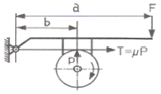
- 0.25
- 0.5
- 1
- 4
(정답률: 48%)
4과목: 전기제어공학
61. 제어 동작에 따른 분류 중 불연속제어에 해당되는 것은?
- ON/OFF 동작
- 비례제어 동작
- 적분제어 동작
- 미분제어 동작
(정답률: 78%)
62. 변압기 Y-Y 결선방법의 특성을 설명한 것으로 틀린 것은?
- 중성점을 접지할 수 있다.
- 상전압이 선간전압의 1/√3이 되므로 절연이 용이하다.
- 선로에 제3조파를 주로 하는 충전전류가 흘러 통신장해가 생긴다.
- 단상변압기 3대로 운전하던 중 한 대가 고장이 발생해도 V결선 운전이 가능하다.
(정답률: 63%)
63. 피드백 제어계를 시퀀스 제어계와 비교하였을 경우 그 이점으로 틀린 것은?
- 목표값에 정확히 도달할 수 있다.
- 제어계의 특성을 향상시킬 수 있다.
- 제어계가 간단하고 제어기가 저렴하다.
- 외부조건의 변화에 대한 영향을 줄일 수 있다.
(정답률: 67%)
64. 상용전원을 이용하여 직류전동기를 속도제어 하고자 할 때 필요한 장치가 아닌 것은?
- 초퍼
- 인버터
- 정류장치
- 속도센서
(정답률: 56%)
65. 단위계단 함수 u(t)의 그래프는?
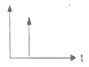
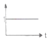
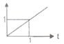
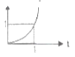
(정답률: 65%)
66. 피드백 제어계에서 제어요소에 대한 설명 중 옳은 것은?
- 조작부와 검출부로 구성되어 있다.
- 조절부와 검출부로 구성되어 있다.
- 목표값에 비례하는 신호를 발생하는 요소이다.
- 동작신호를 조작량으로 변화시키는 요소이다.
(정답률: 57%)
67. 어떤 제어계의 입력으로 단위 임펄스가 가해졌을 때 출력이 te-3t이었다. 이 제어계의 전달함수는?
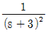
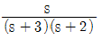
- s(s+2)
- (s+1)(s+2)
(정답률: 56%)
68. PI 동작의 전달함수는? (단, KP는 비례감도이다.)
- KP
- KPsT
- K(1+sT)
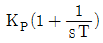
(정답률: 71%)
69. PLC프로그래밍에서 여러 개의 입력 신호 중 하나 또는 그 이상의 신호가 ON되었을 때 출력이 나오는 회로는?
- OR회로
- AND회로
- NOT회로
- 자기유지회로
(정답률: 73%)
70. 온도 보상용으로 사용되는 소자는?
- 서미스터
- 바리스터
- 제너다이오드
- 버랙터다이오드
(정답률: 73%)
71. 유도전동기에서 슬립이 ″0” 이란 의미와 같은 것은?
- 유도제동기의 역할을 한다.
- 유도전동기가 정지상태이다.
- 유도전동기가 전부하 운전상태이다.
- 유도전동기가 동기속도로 회전한다.
(정답률: 70%)
72. 그림과 같이 트랜지스터를 사용하여 논리소자를 구성한 논리회로의 명칭은?
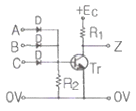
- OR회로
- AND회로
- NOR회로
- NAND회로
(정답률: 52%)
73. 다음 그림과 같은 회로에서 스위치를 2분 동안 닫은 후 개방하였을 때 A지점에서 통과한 모든 전하량을 측정하였더니 240C 이었다. 이 때 저항에서 발생한 열량은 약 몇 cal 인가?
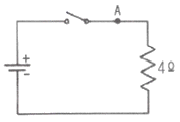
- 80.2
- 160.4
- 240.5
- 460.8
(정답률: 44%)
74. R-L-C 병렬회로에서 회로가 병렬 공진되었을 때 합성 전류는 어떻게 되는가?
- 최소가 된다.
- 최대가 된다.
- 전류는 흐르지 않는다.
- 전류는 무한대가 된다.
(정답률: 50%)
75. 그림과 같은 회로에서 단자 a, b간에 주파수 f(Hz)의 정현파 전압을 가했을 때, 전류값 A1과 A2의 지시가 같았다면 f, L, C간의 관계는?
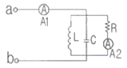
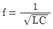
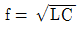
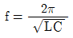
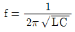
(정답률: 64%)
76. 논리식
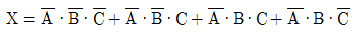
를 가장 간단히 정리한 것은?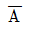
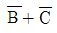
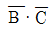
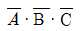
(정답률: 69%)
77. 그림과 같은 회로에서 E 를 교류전압 V의 실효값이라 할 때, 저항 양단에 걸리는 전압 ed의 평균값은 E 의 약 몇 배 정도인가?
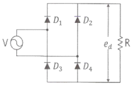
- 0.6
- 0.9
- 1.4
- 1.7
(정답률: 45%)
78. 자장 안에 놓여 있는 도선에 전류가 흐를 때 도선이 받는 힘 F= BI ℓsinθ(N) 이다. 이것을 설명하는 법칙과 응용기기가 맞게 짝지어진 것은?
- 플레밍의 오른손법칙 - 발전기
- 플레밍의 왼손법칙 - 전동기
- 플레밍의 왼손법칙 - 발전기
- 플레밍의 오른손법칙 - 전동기
(정답률: 58%)
79. 다음과 같이 저항이 연결된 회로의 a점과 b점의 전위가 일치할 때, 저항 R1과 R5 의 값(Ω)은?
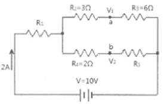
- R1 = 4.5Ω, R5 = 4Ω
- R1 = 1.4Ω, R5 = 4Ω
- R1 = 4Ω, R5 = 1.4Ω
- R1 = 4Ω, R5 = 4.5Ω
(정답률: 49%)
80. 그림과 같은 R-L 직렬회로에서 공급전압이 10V 일 때 VR = 8V 이면 VL 은 몇 V 인가?
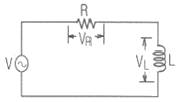
- 2
- 4
- 6
- 8
(정답률: 52%)